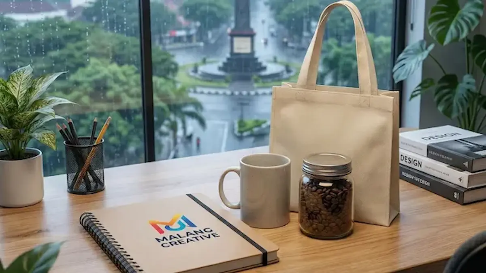

Corporate Gifts ID - Souvenir kantor untuk FGD (Focus Group Discussion) yang ideal dan efektif adalah barang fungsional yang mendukung produktivitas peserta, seperti buku catatan premium, tumbler stainless steel, atau power bank. Pemilihan souvenir berkualitas tidak hanya berfungsi sebagai bentuk apresiasi tulus kepada peserta dan narasumber ahli, tetapi juga menjadi strategi branding yang kuat untuk memperkuat ingatan positif terhadap instansi atau korporat penyelenggara.
Pilihan souvenir yang tepat memastikan peserta merasa dihargai atas kontribusi waktu serta pemikirannya. Lebih dari itu, cinderamata yang bermutu memberikan nilai guna jangka panjang yang relevan dengan kebutuhan profesional mereka sehari-hari di ruang kerja.
Poin Kunci Pemilihan Souvenir FGD:
- Fungsionalitas Utama: Barang harus mendukung produktivitas kerja langsung, seperti buku catatan premium dan tumbler vakum.
- Representasi Kredibilitas: Kualitas cinderamata mencerminkan profesionalisme serta standar integritas organisasi penyelenggara.
- Estimasi Anggaran Terukur: Rentang harga ideal berada di kisaran Rp 45.000 hingga Rp 225.000 per peserta sesuai segmentasi audiens.
- Personalisasi Elegan: Mengutamakan teknik grafir laser atau deboss agar tampilan logo tampak eksklusif tanpa kesan mencolok.
- Perencanaan Disiplin: Pemesanan optimal diselesaikan 14 hingga 21 hari kerja sebelum agenda kegiatan berlangsung.
Mengapa Kualitas Souvenir Menentukan Keberhasilan Acara-
Dalam kegiatan profesional seperti FGD, souvenir berfungsi sebagai representasi fisik dari kredibilitas penyelenggara. Peserta FGD umumnya terdiri dari kalangan profesional, akademisi, pengambil kebijakan, atau konsumen terpilih yang memberikan wawasan strategis. Memberikan barang yang tepat bukan hanya sekadar etika kesopanan formal, melainkan bagian integral dari strategi branding perusahaan.
Souvenir yang fungsional dan berkualitas tinggi akan digunakan berulang kali di ruang kerja maupun saat perjalanan dinas, menciptakan eksposur merek yang konsisten. Sebaliknya, memberikan barang yang mudah rusak, berkualitas rendah, atau tidak relevan sering kali berakhir tidak terpakai atau dibuang di tempat sampah, yang justru dapat merugikan citra dan reputasi instansi di mata peserta.
Rekomendasi Spesifik dan Estimasi Anggaran
Berikut adalah rincian spesifikasi teknis dan kisaran harga souvenir FGD untuk memudahkan perencanaan anggaran dan estimasi Rencana Anggaran Biaya (RAB) pengadaan kantor Anda:
| Jenis Souvenir | Spesifikasi Ideal | Estimasi Harga/Pcs | Target Peserta |
|---|---|---|---|
| Buku Catatan Premium | Ukuran A5, Hardcover Kulit Sintetis, Kertas Bookpaper 80gsm, Tali Pembatas | Rp 45.000 - Rp 85.000 | Akademisi, Peneliti, Narasumber |
| Tumbler Vacuum | Stainless Steel 304 (Double Wall), Tahan Suhu 8-12 Jam, Kapasitas 500ml, Sablon Laser | Rp 75.000 - Rp 130.000 | Peserta Umum, Profesional Korporat |
| Power Bank Slim | Kapasitas 10.000 mAh, Fast Charging, Material Metal/Aluminium, Indikator Daya LED | Rp 110.000 - Rp 225.000 | Eksekutif, Penggiat Startup, Narasumber |
| Flashdisk Kulit | USB 3.0, Kapasitas 32GB, Gantungan Kunci Kulit dengan Emboss Logo Presisi | Rp 55.000 - Rp 90.000 | Instansi Pemerintah, BUMN, Dinas |

Kombinasi notebook premium dan perlengkapan kerja modern sebagai souvenir FGD kekinian.
3 Kriteria Utama Memilih Souvenir FGD
Pastikan pilihan barang Anda memenuhi tiga parameter kunci berikut agar alokasi anggaran tepat sasaran dan berdaya guna maksimal:
- Fungsionalitas Tinggi: Barang harus mampu memecahkan masalah praktis atau memenuhi kebutuhan harian peserta saat sesi diskusi maupun setelahnya. Misalnya, mengatasi baterai gawai yang menipis dengan power bank atau memfasilitasi pencatatan ide cepat menggunakan buku agenda berkualitas.
- Desain Netral dan Elegan: Hindari pencetakan logo yang terlalu besar dan mencolok. Gunakan teknik deboss (cetak tenggelam) pada sampul kulit atau grafir laser pada permukaan logam untuk memancarkan kesan eksklusif, bersahaja, dan berkelas.
- Durabilitas Material: Pilih material yang terbukti awet seperti logam tahan karat, kulit sintetis premium, atau plastik ABS berkualitas tinggi. Barang yang awet dan kokoh secara langsung mencerminkan soliditas serta komitmen mutu dari organisasi Anda.
Kesimpulan
Memilih souvenir kantor untuk Focus Group Discussion (FGD) adalah investasi penting dalam membangun hubungan kemitraan profesional jangka panjang. Hindari pengadaan barang murah yang mudah rusak dan beralihlah ke item produktivitas bermutu tinggi seperti notebook bersampul kulit, tumbler berinsulasi, atau gadget pendukung aktivitas kantor.
Dengan perencanaan anggaran yang cermat dan pemilihan vendor terpercaya seperti CorporateGifts.ID, paket souvenir Anda mampu mengubah peserta FGD menjadi pendukung setia identitas perusahaan, sekaligus mengokohkan otoritas merek Anda di mata seluruh pemangku kepentingan.